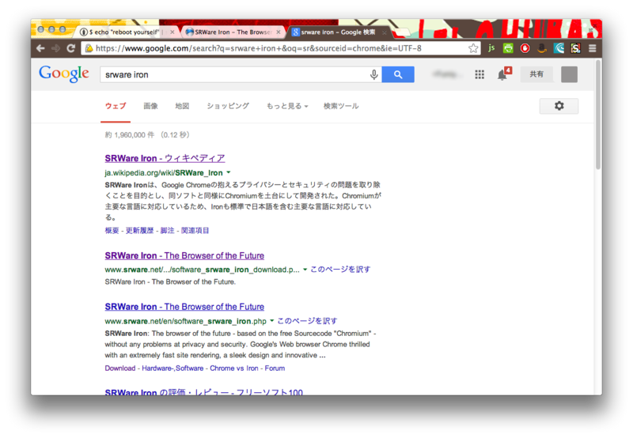

個人情報を送信しないGoogle Chromeクローン『SRWare Iron』
Chromeは個人情報をGoogleに送っている
私はよくGoogle Chromeを使っているのですが、実はGoogleに様々な個人情報を送信しているという事をよく聞きます。
前から個人情報についてはかなり気になっていたのですが、Chromeは使いやすいので別のブラウザにしたくない…。
そんな現状を打破するブラウザ、それが『SRWare Iron』 （通称：Iron）です。
Ironの外観はChromeそのもの
Ironの外観は次のような感じです。

もう全くChromeと同じですね。右上のアイコンはChromeの拡張機能です。
なぜだろうと思いますよね。それもそのはずで、IronはChromiumというGoogle Chromeのオープンソース版を元に作られているので、ほとんど同じものなんです。
Googleの呪縛を断ち切るブラウザ
見た目は同じのIronブラウザですが、その違いは、
Googleへ検索状況などの個人情報を送らない
ということです。
例えばGoogle Chromeだと、アドレスバーに検索語句を打ち込むとサジェストが表示されますが、あの情報もGoogleが収集しているそうで、Ironでは無効になっています。
つまり、Chromeの便利な機能を一部切り捨てる代わりに、個人情報を送らないようにするブラウザだということです。
ダウンロード
Ironは Windows, Mac, Linuxに対応しています。
ダウンロードは SRWare Ironのダウンロードページ（英語）からできます。
英語なので一応リンクを下に貼っておきます。
Windows:
http://www.srware.net/downloads/srware_iron.exeWindows (ポータブル版):
http://www.srware.net/downloads/IronPortable.zipMac:
http://www.srware.net/downloads/iron-mac.zipDebian系:
http://www.srware.net/downloads/iron.deb (32-bit)
http://www.srware.net/downloads/iron64.deb (64-bit)Redhat系 (Beta版):
http://www.srware.net/downloads/iron.rpm (32-Bit)
http://www.srware.net/downloads/iron64.rpm (64-Bit)Linux:
http://www.srware.net/downloads/iron-linux.tar.gz (32-bit)
http://www.srware.net/downloads/iron-linux-64.tar.gz (64-bit)
基本的な使い方
インストールができたら、[設定]から、
- Googleアカウントでログイン
- Google Chromeとの同期
をすると完全に移行ができます。
※ 同期の際、サーバーアクセスエラーが起こることがありますが、気にせず置いておくとそのうち完了します。
また、新しい拡張機能を入れようとすると、Chrome Web Storeが全く違うことがわかると思いますが、以前のストアを使いたいときにはGoogleで検索するとヒットします。
他にもユーザエージェントをChromeに変更しないと見れないサイトもあるようです。 (参照：http://dic.nicovideo.jp/a/srware%20iron）
まとめ
Googleは個人情報を自由に扱えるように規約を変更しているということもあり、これからもGoogle系サービスを使う場合は注意が必要だと思います。
そんな中で、SRWare Ironのような活動があるのは、とても助かりますね。

日本経済新聞出版社
売り上げランキング: 135,944